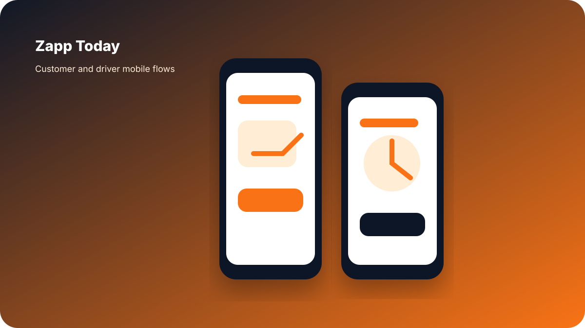

Zapp Today
Designed customer and driver app flows for a logistics and delivery product, moving from wireframes to final prototype.

Role
Product Designer
Users
Customers and drivers
Focus
Booking, tracking, delivery status
What I worked on
- Customer app wireframes and final mobile screens.
- Driver app wireframes and task flow screens.
- Booking, tracking, and delivery status interaction patterns.
- Prototype flow connecting both user roles.
- Interface clarity for logistics actions and status updates.
This page only claims app design work. I did not frame the marketing website as my work.